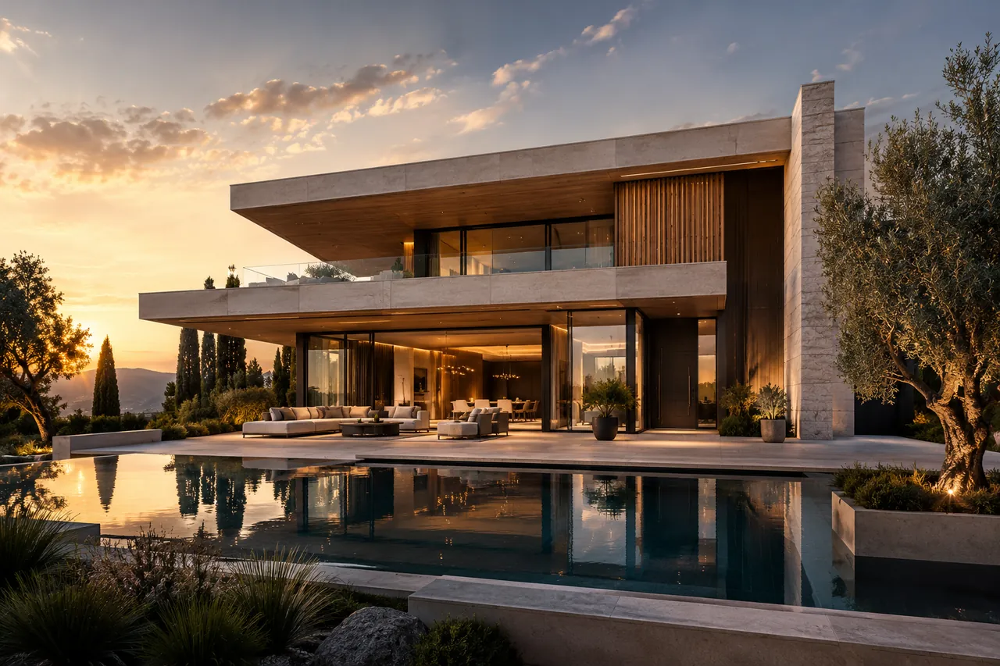
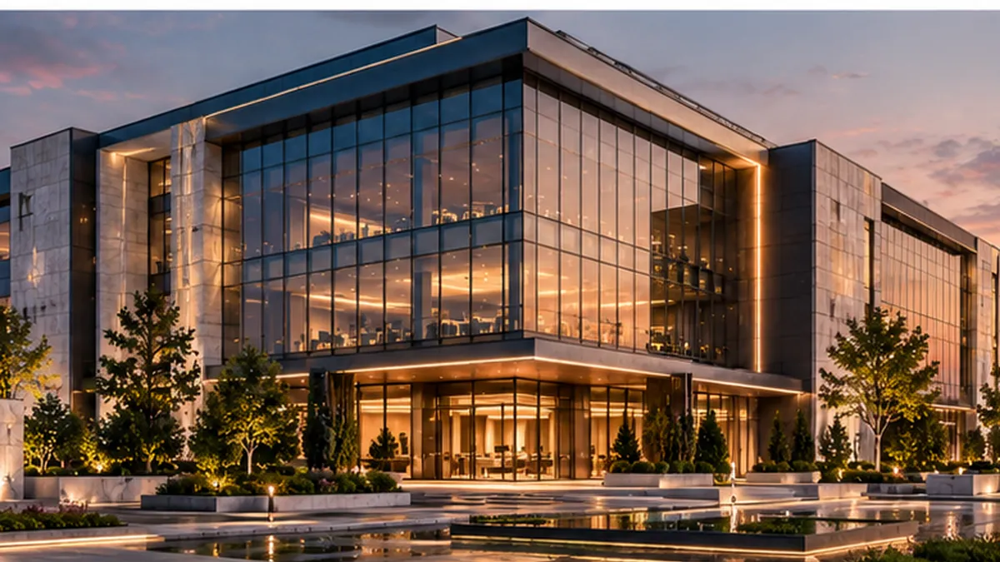
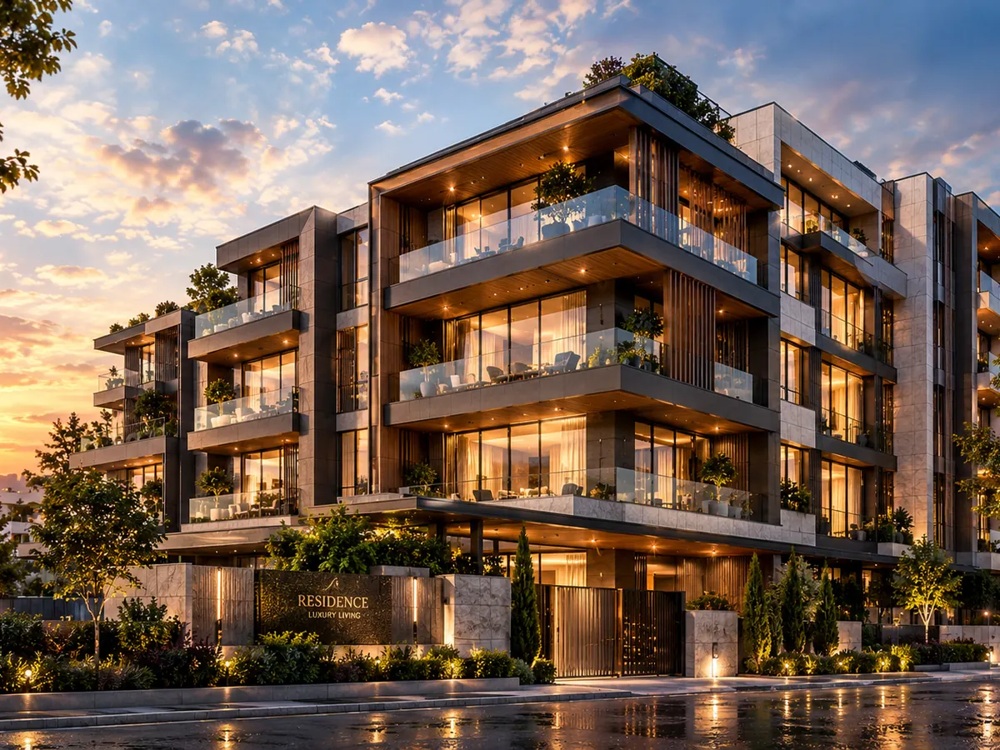
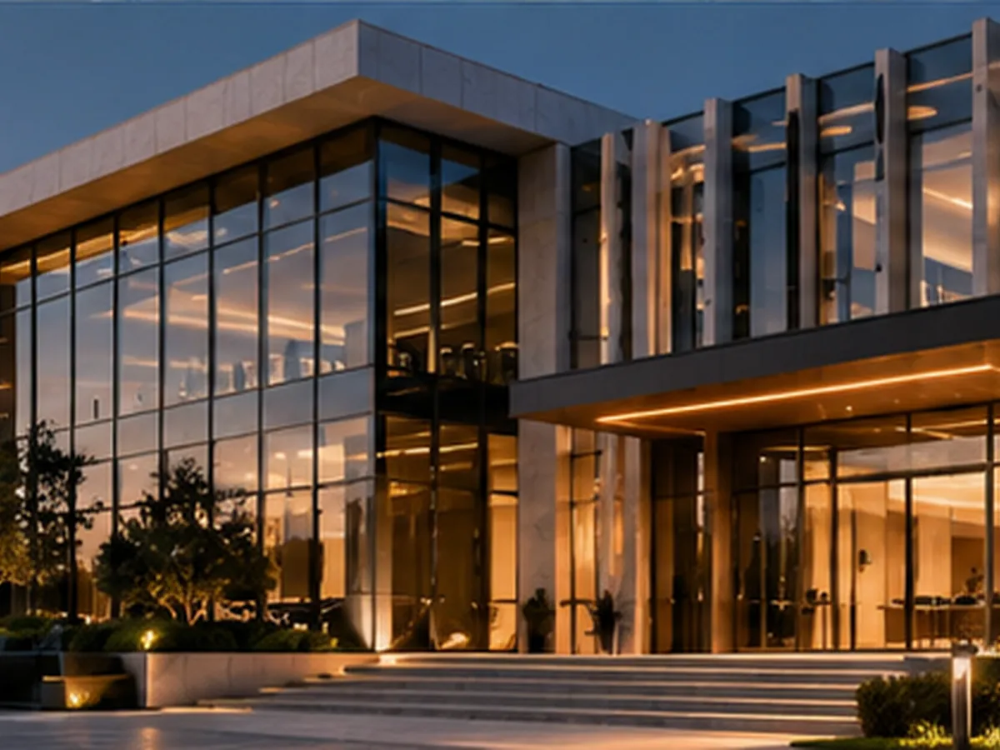

فرم و هویت
تناسب حجمها، ریتم خطوط و پیوند بنا با زمینه، هویت بصری و شخصیت فضا را شکل میدهد.
معماری، فراتر از یک سازه
روایت معماری، متریال و جزئیاتی که یک فضا را به تجربهای ماندگار تبدیل میکنند.

درباره مجموعه
در رادمهر گروپ، معماری را ترکیبی از زیبایی، عملکرد و کیفیت تجربه میدانیم. این وبسایت بستری برای معرفی ایدهها و نمونههای معماری مجموعه است؛ با تمرکز بر تناسبات، انتخاب متریال، نور و ارتباط سازه با محیط پیرامون.
آشنایی و ارتباط با مجموعهحوزههای فعالیت
هفت حوزه طراحی و ساخت که در این وبسایت معرفی میشوند؛ برای آشنایی با شرح هرکدام، صفحه خدمات را ببینید.
از ایدهپردازی و سازماندهی فضا تا فرم و نقشه معماری.
جزئیات خدمت ↗هماهنگی نور، چیدمان، متریال و تجربه حضور در فضا.
جزئیات خدمت ↗ایجاد هویت بصری متناسب با عملکرد و زمینه پروژه.
جزئیات خدمت ↗پیوند طرح، جزئیات فنی و مراحل اجرای ساختمان.
جزئیات خدمت ↗بازتعریف فضاهای موجود با توجه به نیازهای تازه.
جزئیات خدمت ↗هماهنگی تصمیمها، زمانبندی و کنترل مراحل کار.
جزئیات خدمت ↗ارتباط معماری با فضای باز، مسیرها و پوشش گیاهی.
جزئیات خدمت ↗رویکرد طراحی
از انتخاب فرم و متریال تا سازماندهی فضا، هر تصمیم باید به زیبایی، آسایش و عملکرد کمک کند.

تناسب حجمها، ریتم خطوط و پیوند بنا با زمینه، هویت بصری و شخصیت فضا را شکل میدهد.

انتخاب آگاهانه سنگ، چوب و شیشه، در کنار کیفیت اتصال اجزا، حس و دوام فضا را کامل میکند.

نور طبیعی، دسترسی روان و چیدمان سنجیده، فضایی کاربردی و آسوده برای زندگی و کار میسازند.
سه نمونهٔ مفهومی
از ویلای اختصاصی تا مجتمع مسکونی و فضای اداری؛ این سه طرح مفهومی، رویکردهای متفاوتی به فرم، متریال، نور و کیفیت تجربهٔ فضا را نمایش میدهند.
 01
01

02
03این تصاویر و شرحها نمونههای مفهومی برای نمایش رویکرد طراحیاند؛ اطلاعات اجرایی هر پروژه پس از تأیید مجموعه درج خواهد شد.
مسیر شکلگیری یک ایده
این چارچوب، مسیر پیشنهادی گفتوگو و برنامهریزی یک پروژه را نمایش میدهد؛ جزئیات اجرایی هر همکاری با توجه به دامنه کار تعیین میشود.
گفتوگو درباره خواستهها، محدودیتها و هدفهای پروژه.
تعیین محدوده خدمات، اولویتها و خروجیهای مورد انتظار.
توسعه ایده و هماهنگی تصمیمهای طراحی با نیاز پروژه.
در صورت قرار داشتن اجرا در دامنه همکاری، پیگیری مراحل و جزئیات پروژه.
اصول نگاه ما
در این رویکرد، فرم بهتنهایی کافی نیست؛ نور، عملکرد، متریال و ارتباط فضا با محیط باید در کنار هم دیده شوند.
فرم و مقیاس باید با زمینه و کارکرد فضا هماهنگ باشند.
انتخاب آگاهانه متریال در کیفیت بصری و حسی فضا اثر میگذارد.
نور، دسترسی و سازماندهی درست فضا بخشی از کیفیت معماریاند.
پرسشهای متداول
پاسخهای کوتاه به پرسشهای اولیه درباره حوزه خدمات و طرحهای مفهومی این وبسایت.
پرسش دیگری دارید؟خیر. سه نمونه موجود در نسخه فعلی، طرحهای مفهومی برای نمایش ایده و رویکرد بصری هستند و بهعنوان سابقه اجرای واقعی معرفی نمیشوند.
شرح کوتاهی از نوع پروژه، محل یا شرایط کلی آن، نیازهای اصلی و زمانبندی مورد نظر میتواند شروع مناسبی برای گفتوگو باشد.
صفحه خدمات حوزههای مختلف را جداگانه معرفی میکند. دامنه و امکان ارائه هر خدمت باید با توجه به نیاز پروژه و توافق طرفین مشخص شود.
هزینه و زمان به ابعاد، پیچیدگی، محدوده خدمات و شرایط پروژه وابسته است؛ بنابراین بدون دریافت اطلاعات پروژه عددی در این وبسایت اعلام نمیشود.
از صفحه تماس با ما، نوع درخواست را انتخاب کنید و توضیح کوتاهی درباره نیازتان بنویسید.
شروع یک گفتوگو
برای دریافت اطلاعات بیشتر درباره رویکرد طراحی یا مطرحکردن یک همکاری، از راه صفحهٔ تماس با ما در ارتباط باشید.